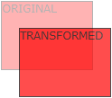

CSS Transforms Methods
CSS transforms allow you to move, rotate, scale, and skew elements.
CSS 2D Transforms Methods
With the CSS transform property you can use the following 2D transformation methods:
- translate()
- rotate()
- scaleX()
- scaleY()
- scale()
- skewX()
- skewY()
- skew()
- matrix()
Some older browsers need specific prefixes (-ms- or -webkit-) to understand the 2D transform properties:
The translate() Method
The translate() method moves an element from its current position (according to the parameters given
for the X-axis and the Y-axis):

The following example moves the div-element 50 pixels to the right, and 20 pixels down from its current position:
We have a div element on its current position.
This div element is moved 50 pixels to the right, and 20 pixels down from its current position.
The code for moved element:
div {
width: 300px;
height: 100px;
background-color: yellow;
border: 1px solid black;
-ms-transform: translate(50px,20px); /* IE 9 */
-webkit-transform: translate(50px,20px); /* Safari prior 9.0 */
transform: translate(50px,20px); /* Standard syntax */
}
The rotate() Method
The rotate() method rotates an element clockwise or counter-clockwise.

This a normal div element.
This div element is rotated clockwise 20 degrees.
div {
-ms-transform: rotate(20deg); /* IE 9 */
-webkit-transform: rotate(20deg); /* Safari prior 9.0 */
transform: rotate(20deg); /* Standard syntax */
}
Using negative values will rotate the element counter-clockwise.
This a normal div element.
This div element is rotated counter-clockwise 20 degrees.
div {
-ms-transform: rotate(20deg); /* IE 9 */
-webkit-transform: rotate(20deg); /* Safari prior 9.0 */
transform: rotate(-20deg); /* Standard syntax */
}
The scale() Method
The scale() method increases or decreases the size of an element (according to the parameters given for the
width and height).

The following example increases the div-element to be two times of its original width, and three times of its
original height:
This div element is two times of its original width, and three times of its original height.
The code for above div-element:
div {
width: 200px;
height: 100px;
background-color: yellow;
border: 1px dotted black;
-ms-transform: scale(2,3); /* IE 9 */
-webkit-transform: scale(2,3); /* Safari prior 9.0 */
transform: scale(2,3); /* Standard syntax */
Have a look at original element:
We had a div element with its original width=200px and height=100px.
The following example decreases the div-element to be half of its original width and height:
This div element is decreased to be half of its original width and height.
The code for decreased div-element:
div {
width: 200px;
height: 100px;
background-color: yellow;
border: 1px dotted black;
-ms-transform: scale(0.5,0.5); /* IE 9 */
-webkit-transform: scale(0.5,0.5); /* Safari prior 9.0 */
transform: scale(0.5,0.5); /* Standard syntax */
The scaleX() Method
The scaleX() method increases or decreases the width of an element.
This div element is two times of its original width.
The code for above div-element:
div {
width: 200px;
height: 100px;
background-color: yellow;
border: 1px dotted black;
-ms-transform: scaleX(2); /* IE 9 */
-webkit-transform: scaleX(2); /* Safari prior 9.0 */
transform: scaleX(2); /* Standard syntax */
Have a look at original element:
We had a div element with its original width=200px and height=100px.
This div element is half of its original width.
The code for above div-element:
div {
width: 200px;
height: 100px;
background-color: yellow;
border: 1px dotted black;
-ms-transform: scaleX(0.5); /* IE 9 */
-webkit-transform: scaleX(0.5); /* Safari prior 9.0 */
transform: scaleX(0.5); /* Standard syntax */
The scaleY() Method
The scaleY() method increases or decreases the height of an element.
The following example increases the div-element to be three times of its original height:
This div element is three times of its original height.
The code for above div-element:
div {
width: 200px;
height: 100px;
background-color: yellow;
border: 1px dotted black;
-ms-transform: scaleY(3); /* IE 9 */
-webkit-transform: scaleY(3); /* Safari prior 9.0 */
transform: scaleY(3); /* Standard syntax */
Have a look at original element:
We had a div element with its original width=200px and height=100px.
This div element is half of its original height.
The code for above div-element:
div {
width: 200px;
height: 100px;
background-color: yellow;
border: 1px dotted black;
-ms-transform: scaleY(0.5);/* IE 9 */
-webkit-transform: scaleY(0.5);/* Safari prior 9.0 */
transform: scaleY(0.5);/* Standard syntax */
The skewX() Method and The skewY() Method
The skewX() method skews an element along the X-axis by the given angle.
The following example skews the div-element 20 degrees along the X-axis:
This div element is skewed 20 degrees along the X-axis.
The code for above div-element:
div {
width: 300px;
height: 100px;
background-color: yellow;
border: 1px dotted black;
-ms-transform: skewX(20deg); /* IE 9 */
-webkit-transform: skewX(20deg); /* Safari prior 9.0 */
transform: skewX(20deg); /* Standard syntax */
We had a div element with no skew.
The skewY() method skews an element along the Y-axis by the given angle.
This div element is skewed 20 degrees along the Y-axis.
The code for above div-element:
div {
width: 300px;
height: 100px;
background-color: yellow;
border: 1px dotted black;
-ms-transform: skewY(20deg); /* IE 9 */
-webkit-transform: skewY(20deg); /* Safari prior 9.0 */
transform: skewY(20deg); /* Standard syntax */
The skew() Method
The skew() method skews an element along the X and Y-axis by the given angles.
If the second parameter is not specified, it has a zero value. So, the following example skews the div-element 20
degrees along the X-axis
This a normal div element.
The following example skews the div-element 20 degrees along the X-axis, and 10 degrees along the Y-axis:
This div element is skewed 20 degrees along the X-axis, and 10 degrees along the Y-axis.
The code for above div-element:
div {
width: 300px;
height: 100px;
background-color: yellow;
border: 1px dotted black;
-ms-transform: skew(20deg,10deg); /* IE 9 */
-webkit-transform: skew(20deg,10deg); /* Safari prior 9.0 */
transform: skew(20deg,10deg); /* Standard syntax */
The matrix() Method
The matrix() method combines all the 2D transform methods into one.
The matrix() method take six parameters, containing mathematic functions, which allows you to rotate, scale, move
(translate), and skew elements.
The parameters are as follow: matrix(scaleX(),skewY(),skewX(),scaleY(),translateX(),translateY())
This a normal div element.
Using the matrix() method.
Another use of the matrix() method.
#myDiv1 {
-ms-transform: matrix(1, -0.3, 0, 1, 0, 0); /* IE 9 */
-webkit-transform: matrix(1, -0.3, 0, 1, 0, 0); /* Safari prior 9.0 */
transform: matrix(1, -0.3, 0, 1, 0, 0); /* Standard syntax */
}
#myDiv2 {
-ms-transform: matrix(1, 0, 0.5, 1, 150, 0); /* IE 9 */
-webkit-transform: matrix(1, 0, 0.5, 1, 150, 0); /* Safari prior 9.0 */
transform: matrix(1, 0, 0.5, 1, 150, 0); /* Standard syntax */
}